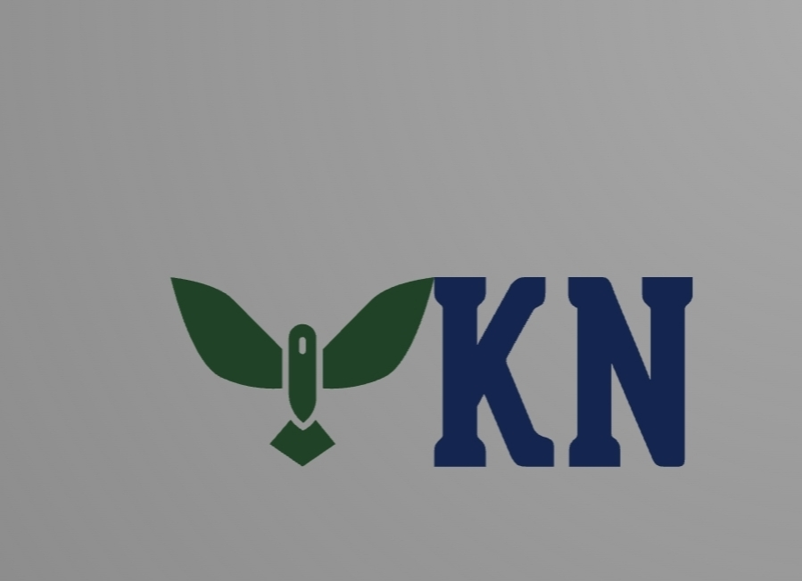

The Community-Driven Meme Coin Built on Solana.
Buy YKNYarkan is a community-driven meme coin built on the Solana blockchain. Our mission is transparency, long-term growth and building a strong community.
✅ Launch
✅ Website
✅ Community
🔜 DEX Listing
🔜 CoinGecko
🔜 CoinMarketCap
What is Yarkan?
A Community Driven Meme Coin.
Blockchain
Solana